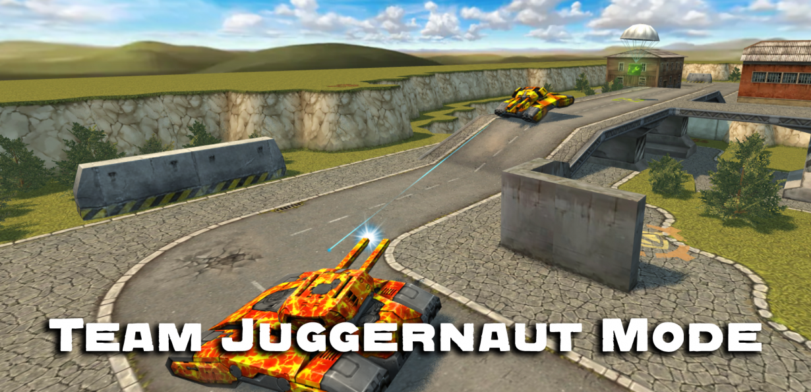
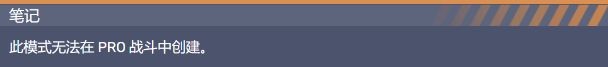
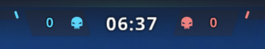
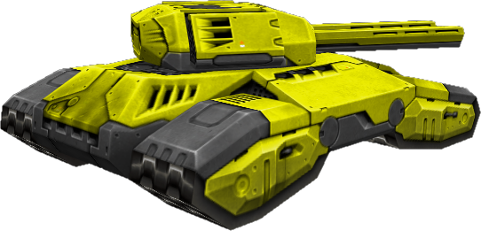
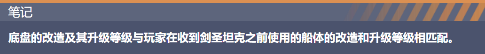

概括
每个团队的一名坦克手控制着独特的剑圣坦克。
当剑圣被摧毁时，超级坦克会前往下一个重生的队友（自毁者除外）。
每次摧毁敌方剑圣，团队获得
1 分。
每个团队的任务是不止一次摧毁敌人的剑圣。战斗受到得分或时间的限制。
剑圣由炮塔终结者和底盘生化者组成，因此得名模式。
终结者是一种特殊的炮塔，具有两种不同模式的射击能力。
使用长双炮管，它可以发出集中爆发的能量，穿透敌方坦克的装甲，从内到外造成伤害。
终结者还可以从侧面部署其火箭发射系统，用激光锁定敌人并发射由六枚火箭组成的齐射。

图标和指示器
剑圣的标志
我方剑圣
我们要保护好我方剑圣
敌方剑圣
我们的任务是进攻敌方剑圣

团队剑圣计分器
计分器显示目前双方各自击杀剑圣的数量
剑圣坦克
如前所述，剑圣由炮塔终结者组成 - 它本身基于炮塔激光炮和火箭炮。
另一方面，船体，主宰，囤积了大量的生命值，
同时仍然能够以比任何完全升级的轻型船体更快的速度行驶。


独特的功能
剑圣使用与现在驾驶它的玩家的常规坦克相同的迷彩和防御模块。
终结者炮塔具有独特的伤害类型，无法使用激光炮和火箭炮防御模块。
然而，终结者强大的暴击可以通过犰狳保护模块进行保护。
剑圣有一个蓝色的过速装置。激活它后，剑圣将推开并将附近的坦克发射到空中。
过速装置为剑圣恢复全部生命值，并在 40 秒内充电
控制剑圣的玩家不能使用车库中的大部分道具，包括地雷。唯一的例外是金箱子和核能道具
护甲提升、伤害提升和速度提升图标总是出现在剑圣上，但它们没有任何效果。
拾取补给箱也不会对剑圣产生任何影响。唯一的例外是维修工具箱子和核能箱子。
控制剑圣的玩家不能使用无人机，这意味着在玩剑圣时不会使用电池。
如果盟军独裁者在其附近激活其过速装置，则剑圣也会埋设地雷。
有趣的事实
2018 年 7 月 20 日，第一个剑圣模式（单人）出现。
单人剑圣模式于 2019 年 9 月 27 日在外服被团队剑圣取代。
单人剑圣模式于 2020 年 4 月 4 日在国服被团队剑圣取代。
在将剑圣模式引入匹配之前，该模式会举行一些特殊的事件战斗。